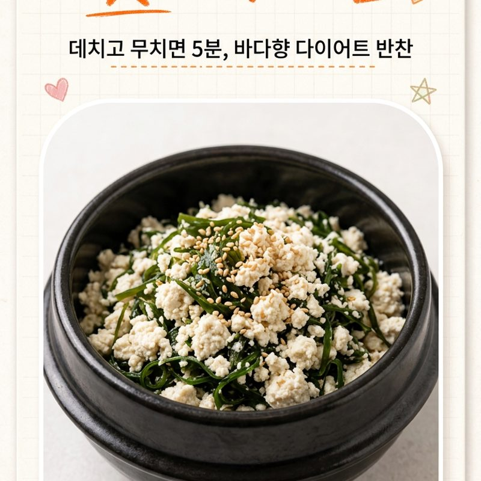

톳 두부무침
바다 향 가득 비밀재료에
고소한 두부를 더한
5분 저칼로리 밑반찬

쿠팡 파트너스 활동의 일환으로, 수수료를 제공받습니다.
🔒 비밀 재료
이 레시피의 핵심 재료!
궁금하다면 아래 버튼을 눌러보세요.
함께 쓰면 좋은 재료 ↓
추가 재료 보러가기쿠팡 파트너스 활동의 일환으로, 수수료를 제공받습니다.
👨🍳 만드는 방법
재료
비밀재료 100g, 두부 1/2모
🥄 양념 황금 배합
- 소금 2.5ml
- 간장 5ml
- 참기름 5ml
- 참깨 10ml
만드는 법
- 1. 비밀재료 손질
비밀재료은 물에 여러 번 헹궈 소금기를 빼고
(비린내가 싫으면 식초 몇 방울) - 2. 비밀재료 데치기
끓는 물에 데쳐 갈색이 초록빛으로 변하면
찬물에 헹궈 먹기 좋게 썰기 - 3. 두부 데치기
두부는 끓는 물에 살짝 데친 뒤
채반에 으깨 물기를 꾹 짜기 - 4. 무치기
볼에 비밀재료·두부를 담고
소금·간장·참기름·참깨 넣기 - 5. 완성
조물조물 살살 무치면 완성
🍜 요즘요리의 한 줄 팁
두부 물기를 꽉 짜야 안 싱겁고 고슬고슬해요.